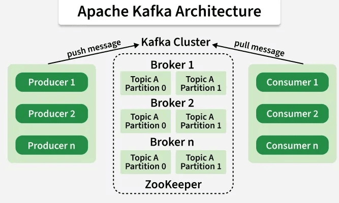
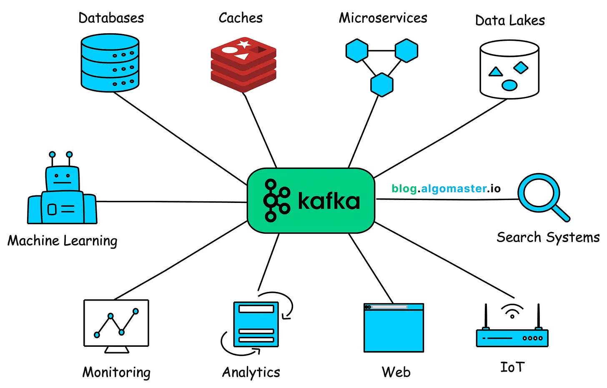
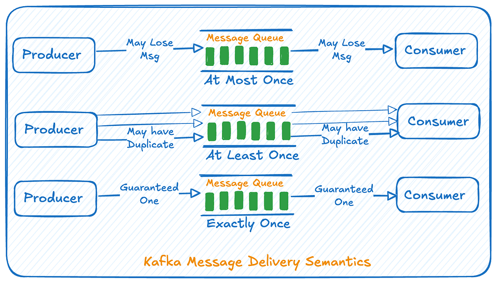
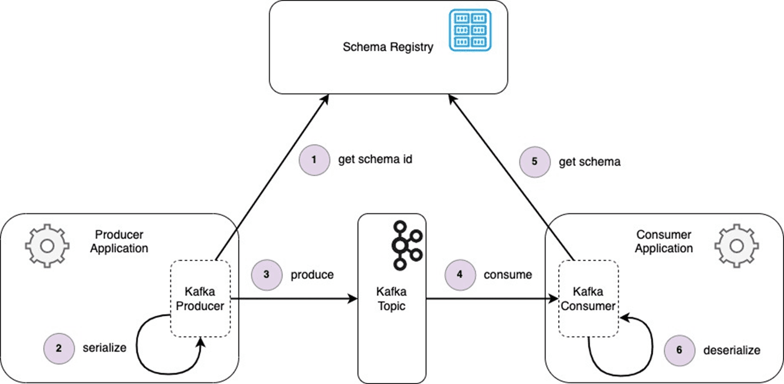
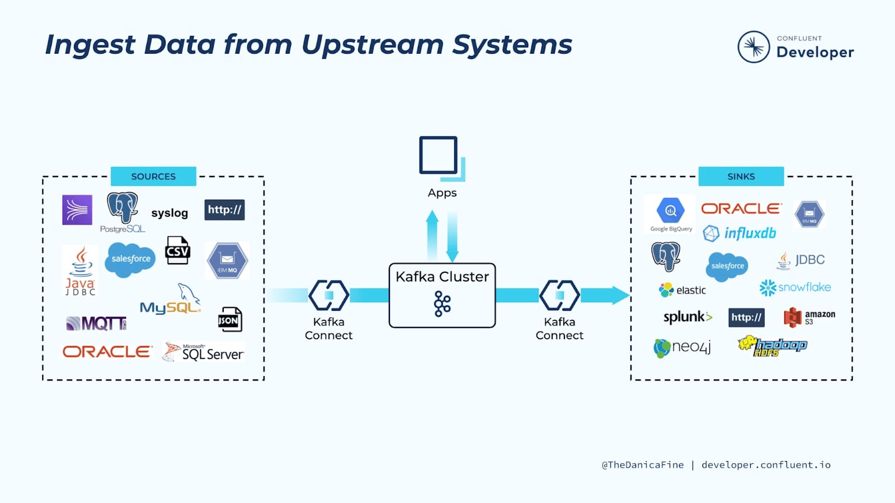
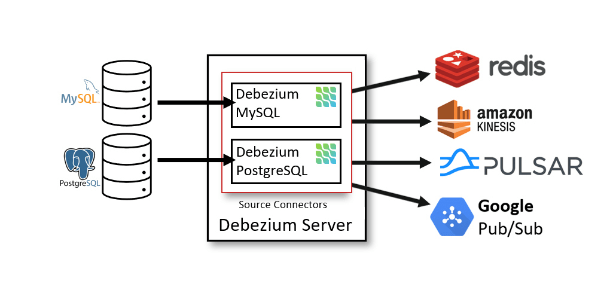
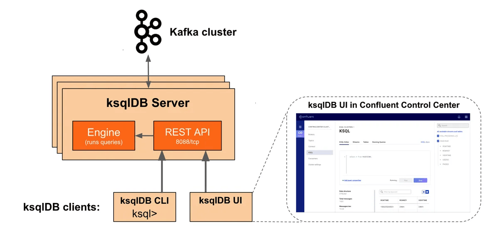
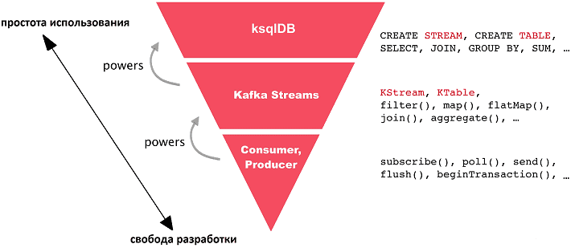
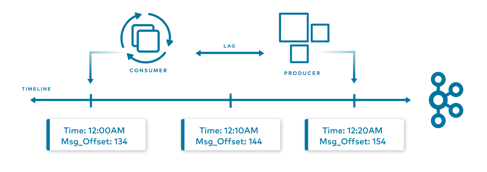

Kafka
Материалы по Kafka и потоковой инфраструктуре.
-
Apache Kafka — распределённая платформа потоковой передачи событий (distributed event streaming platform). Kafka принимает, хранит и позволяет читать потоки событий в реальном времени с высокой пропускной способностью и отказоустойчивостью.
Классические очереди сообщений (RabbitMQ, SQS) передают сообщение одному consumer-у и удаляют его. Kafka работает иначе: сообщения хранятся на диске в упорядоченном журнале (log) и могут быть прочитаны любым количеством consumer-ов независимо.
Это делает Kafka пригодной сразу для нескольких ролей:
Роль Суть Message queue Один producer $\to$ один consumer (замена RabbitMQ) Pub/Sub Один topic $\to$ много независимых consumer групп Event store Долгосрочное хранение всей истории событий Stream processing backbone Источник и sink для Flink, Spark Streaming, Kafka Streams ML-системы сталкиваются с Kafka в самых разных местах:
- Сбор событий — клики, просмотры, транзакции, действия пользователей поступают в Kafka и становятся сырыми данными для обучения
- Feature pipeline — вычисление признаков на лету: Flink или Kafka Streams читают события и пишут готовые признаки в feature store
- Online inference — inference-сервис подписывается на Kafka-топик и отвечает предсказаниями в real-time или near-real-time
- Feedback loop — предсказания и реакция пользователей пишутся обратно в Kafka, чтобы накапливать разметку для retraining
- Data pipeline — Kafka Connect доставляет данные из БД (CDC) в data lake или feature store без батчевых ETL
- Мониторинг дрейфа — в production поток предсказаний и признаков идёт через Kafka, а consumer считает метрики дрейфа
Понимание Kafka позволяет проектировать online-системы и разговаривать с data-инженерами, не изобретая велосипедов.
Links
Ресурс Описание Официальная документация Kafka Полная документация Apache Kafka. Kafka: A Distributed Messaging System for Log Processing Оригинальная статья LinkedIn, в которой Kafka была описана впервые. Apache Kafka за 5 минут Короткое введение на русском. Kafka Fundamentals — Confluent Бесплатный курс с интерактивными упражнениями. Чем Kafka отличается от классической очереди сообщений?
Kafka хранит события в персистентном упорядоченном журнале на диске и позволяет читать их многим consumer-ам независимо, не удаляя сообщения после первого чтения.
Перечислите три сценария использования Kafka в ML-системах.
Сбор сырых событий для обучения, online feature pipeline, near-real-time inference, feedback loop для накопления разметки.
Зачем ML Engineer знать Kafka, если есть data-инженеры?
ML Engineer проектирует архитектуру inference-сервисов, feature store-ов и feedback loop-ов. Без понимания Kafka невозможно грамотно обсудить latency, гарантии доставки и схему данных с командой.
-
Основные понятия Kafka
Ключевые понятия Kafka:
Понятие Суть Event / Message Единица данных: ключ + значение + timestamp + заголовки Topic Именованный журнал событий (аналог таблицы или канала) Partition Физический раздел topic-а; каждый partition — упорядоченная очередь Offset Порядковый номер сообщения внутри partition Broker Один сервер Kafka-кластера, хранит партиции Producer Клиент, пишущий события в topic Consumer Клиент, читающий события из topic Consumer Group Группа consumer-ов, совместно читающих topic; каждая партиция назначена только одному consumer в группе 
Схема взаимодействия продюсеров с Kafka. Источник Topic и Partition. Topic делится на партиции для масштабирования. Сообщения с одним ключом всегда попадают в одну партицию (детерминированный роутинг по хешу ключа), что гарантирует порядок для одного ключа.
Offset. Каждый consumer group самостоятельно хранит, до какого offset он дочитал. Это позволяет перечитать историю с любого места или запустить новый consumer group, который начнёт с самого начала.
Consumer Group. Несколько consumer-ов в группе параллельно читают разные партиции одного topic-а. Это горизонтальное масштабирование чтения. Разные group-ы читают один topic независимо — например, одна группа обновляет feature store, другая считает метрики.
Topic
user_eventsс 6 партициями и двумя независимыми consumer group:user_events (6 partitions) ├── Partition 0 ← consumer A (группа: feature-pipeline) ├── Partition 1 ← consumer A (группа: feature-pipeline) ├── Partition 2 ← consumer B (группа: feature-pipeline) ├── Partition 3 ← consumer B (группа: feature-pipeline) ├── Partition 4 ← consumer C (группа: feature-pipeline) └── Partition 5 ← consumer C (группа: feature-pipeline) Та же группа событий: Partition 0..5 ← consumer X (группа: drift-monitor) — читает всё независимоFeature pipeline и drift-monitor получают все одни и те же события, но обрабатывают их независимо.
Число партиций определяет максимальный параллелизм чтения в рамках одной consumer group. Если партиций 6, то > 6 consumer-ов в группе бессмысленны — лишние будут простаивать. Партиции нельзя уменьшить после создания topic-а (только увеличить), поэтому важно закладывать запас при проектировании.

Схема взаимодействия различных микросервисов с Kafka. Источник Что такое offset и зачем он нужен?
Порядковый номер сообщения внутри партиции. Consumer группа сохраняет, до какого offset она дочитала, что позволяет возобновить чтение после перезапуска или перечитать историю.
Как partition обеспечивает порядок сообщений?
Внутри одной партиции сообщения строго упорядочены. Сообщения с одним ключом всегда попадают в одну партицию, поэтому порядок событий для конкретного пользователя или объекта гарантирован.
Зачем нужны consumer groups?
Для масштабирования: consumer-ы внутри группы параллельно читают разные партиции. Разные группы читают один topic независимо друг от друга — каждая хранит свой offset.
Что произойдёт, если consumer-ов в группе больше, чем партиций?
Лишние consumer-ы будут idle — им не достанется ни одной партиции. Число активных reader-ов ≤ числу партиций.
-
Гарантии доставки и retention
Kafka поддерживает три уровня гарантий доставки:
Уровень Что означает Дубли? Потери? At-most-once Сообщение отправлено, подтверждение не ждётся нет возможны At-least-once Повторная отправка при неудаче возможны нет Exactly-once Ровно одна доставка и обработка нет нет 
At-least-once — наиболее распространённый выбор в ML-системах. Producer повторяет отправку при ошибке, consumer может получить дубль при перезапуске до commit offset-а. Обработчик должен быть идемпотентным: повторная обработка одного события не должна менять итог.
Exactly-once (EOS) требует transactional producer и поддержки со стороны sink. В Kafka это реализовано через Kafka Transactions, но добавляет latency и сложность. Нужно только там, где дубль критичен: списание средств, обновление счётчика.
Retention — как долго Kafka хранит сообщения:
- по времени:
retention.ms = 7 * 24 * 3600 * 1000(7 дней) - по объёму:
retention.bytesна партицию
После retention сообщения удаляются. Consumer не может вернуться назад, если retention уже истёк.
Выбор гарантий влияет на архитектуру пайплайна:
- Feature pipeline: at-least-once + идемпотентная агрегация по ключу (upsert в feature store)
- Inference request/response: at-least-once с дедупликацией по request ID
- Feedback loop / разметка: at-least-once достаточно, дубли можно отфильтровать при обучении
- Финансовые транзакции: exactly-once, но это редко нужно ML Engineer-у напрямую
Retention определяет, насколько далеко назад можно отмотать consumer: полезно при горячем перезапуске сервиса или отладке.
Consumer упал и перезапустился до того, как успел закоммитить offset. При at-least-once он перечитает последние N сообщений. Если сервис пишет признаки через upsert (
ON CONFLICT DO UPDATE), дубль не нанесёт вреда.# Идемпотентный upsert — безопасен при at-least-once INSERT INTO feature_store (user_id, feature_value, event_time) VALUES (42, 0.87, '2024-01-15 12:00:00') ON CONFLICT (user_id) DO UPDATE SET feature_value = EXCLUDED.feature_value, event_time = EXCLUDED.event_time WHERE feature_store.event_time < EXCLUDED.event_time;В чём разница между at-least-once и exactly-once?
At-least-once допускает дубли сообщений, но не теряет их. Exactly-once гарантирует ровно одну обработку, но требует транзакционного producer и поддержки sink-а.
Что такое идемпотентность и почему она важна при at-least-once?
Идемпотентная операция даёт одинаковый результат при повторном применении. При at-least-once consumer может получить дубль, и тогда повторная обработка не должна менять состояние системы.
Что произойдёт, если consumer отстал и retention уже истёк?
Consumer не сможет получить пропущенные сообщения — они удалены. Придётся сбросить offset и обработать всё с начала доступных данных или получить данные из другого источника.
- по времени:
-
Паттерны использования Kafka в ML
Kafka встречается в ML-системах в нескольких устойчивых архитектурных паттернах. Важно знать каждый, чтобы проектировать пайплайны самостоятельно и понимать, что предлагают коллеги.
Все действия пользователей (клики, покупки, просмотры, поиск) пишутся в Kafka в реальном времени. Downstream-consumer сохраняет их в data lake (S3, HDFS) или data warehouse (BigQuery, ClickHouse) для последующего обучения.
User Action Producer -> Kafka [raw_events] -> Consumer -> S3 / ClickHouse ↓ Batch trainingПреимущество перед прямой записью в БД: система отвязана от конкретного хранилища — можно добавить новый consumer без изменения producer-а.
Kafka + потоковый процессор (Flink, Spark Streaming, Kafka Streams) позволяют вычислять признаки с малой задержкой и писать их в feature store.
raw_events -> Flink / Kafka Streams -> enriched features -> Feature Store (Redis / Feast) ↓ Online Inference ServiceПример: на основе потока кликов считается скользящее среднее CTR пользователя за последние 5 минут и записывается в Redis. Inference-сервис читает этот признак при каждом запросе.
Запросы на предсказание поступают в Kafka-топик. Inference-сервис подписывается как consumer, делает предсказание и пишет результат в output-топик.
Request -> Kafka [inference_requests] -> Inference Service -> Kafka [inference_results] ↓ Downstream consumer / APIПодходит для асинхронных сценариев: модерация контента, антифрод, email-рекомендации, — где ответ не нужен синхронно в HTTP-ответе.
Предсказания модели и реакция пользователей (клик / нет, купил / нет) собираются в Kafka и используются для накопления разметки, дообучения или мониторинга дрейфа.
Inference result -> Kafka [predictions] User action -> Kafka [user_events] ↓ Join по request_id / session_id ↓ Labeled dataset -> Retraining pipeline ↓ Drift monitor (сравнение распределений)Kafka Connect + Debezium читают binlog/WAL основной БД и публикуют каждое изменение строки как событие в Kafka. Downstream-consumer обновляет feature store или data warehouse без batch-ETL.
PostgreSQL (binlog) -> Debezium -> Kafka [db.public.users] -> Feature Store / DWHЭто устраняет задержку batch-загрузки и упрощает реактивные пайплайны.
Чем online feature pipeline через Kafka лучше batch ETL?
Batch ETL вычисляет признаки раз в час/день, что создаёт задержку. Потоковый pipeline через Kafka обновляет признаки в секунды или минуты после события.
Когда подходит near-real-time inference через Kafka, а когда нужен синхронный HTTP?
Kafka-inference подходит, когда ответ не нужен немедленно в рамках одного HTTP-запроса (антифрод по email, модерация контента, рекомендации). HTTP/gRPC inference подходит для интерактивных сценариев с жёстким latency < 100 мс.
Что такое CDC и зачем он нужен в ML-пайплайне?
Change Data Capture перехватывает изменения в БД через binlog/WAL и публикует их как события. Позволяет обновлять feature store в реальном времени без batch-ETL и не нагружать продуктовую БД тяжёлыми SELECT-ами.
Как построить feedback loop через Kafka?
Prediction-сервис пишет предсказания в топик с request_id. Сервис событий пишет действия пользователя с тем же идентификатором. Downstream join по ключу даёт размеченные примеры для retraining и дрейф-мониторинга.
-
Kafka в Python: producer и consumer
Для работы с Kafka из Python используют две основные библиотеки:
Библиотека Описание confluent-kafka-python Обёртка над librdkafka; высокая производительность, рекомендуется для production kafka-python Чистый Python; проще в установке, ниже throughput В большинстве ML-проектов используют
confluent-kafka.Producer отправляет сообщения в topic. Ключевые настройки:
bootstrap.servers— адрес брокеровacks— подтверждение записи (0/1/all): влияет на надёжность и latencylinger.ms+batch.size— батчевая отправка для throughput
Consumer читает сообщения из topic. Ключевые настройки:
group.id— имя consumer group; сохраняет offset-ыauto.offset.reset— что делать при отсутствии сохранённого offset-а:earliest(с начала) илиlatest(только новые)enable.auto.commit— автоматический commit offset-а (удобно, но небезопасно при at-least-once)
Producer
from confluent_kafka import Producer import json producer = Producer({ "bootstrap.servers": "kafka:9092", "acks": "all", # ждём подтверждения от всех in-sync реплик "linger.ms": 5, # небольшая пауза для батчевания "retries": 5, }) def delivery_report(err, msg): if err: print(f"Delivery failed: {err}") else: print(f"Delivered to {msg.topic()} [{msg.partition()}] @ offset {msg.offset()}") event = { "user_id": 42, "event_type": "click", "item_id": 1001, "timestamp": "2024-01-15T12:00:00Z", } producer.produce( topic="user_events", key=str(event["user_id"]), # ключ -> детерминированная партиция value=json.dumps(event).encode("utf-8"), callback=delivery_report, ) producer.flush() # дождаться отправки всех накопленных сообщенийConsumer
from confluent_kafka import Consumer, KafkaException import json consumer = Consumer({ "bootstrap.servers": "kafka:9092", "group.id": "feature-pipeline-v1", "auto.offset.reset": "earliest", # при старте — читать с начала "enable.auto.commit": False, # коммитим offset вручную }) consumer.subscribe(["user_events"]) try: while True: msg = consumer.poll(timeout=1.0) if msg is None: continue if msg.error(): raise KafkaException(msg.error()) event = json.loads(msg.value().decode("utf-8")) process_event(event) # ваша логика обработки consumer.commit(asynchronous=False) # commit после успешной обработки finally: consumer.close()Ручной commit offset-а — стандартная практика для ML-пайплайнов. Если commit произошёл до реальной обработки, при сбое сообщение потеряется. Если после — при сбое до commit-а сообщение будет обработано повторно (at-least-once). Убедитесь, что обработчик идемпотентен.
Для высоконагруженных consumer-ов используют multi-threading или async-подход: несколько потоков читают разные партиции, но commit-ят offset-ы в основном потоке.
Links
Ресурс Описание confluent-kafka-python docs Официальная документация клиента. Confluent Python Client Examples Примеры producer, consumer, avro, transactions. kafka-python docs Документация альтернативного чистого Python-клиента. Зачем указывать ключ при отправке сообщения?
Ключ определяет, в какую партицию попадёт сообщение (по хешу). Сообщения с одним ключом попадают в одну партицию, что гарантирует их порядок.
Что означает
acks="all"и когда это нужно?Producer ждёт подтверждения записи от всех in-sync реплик. Это максимальная надёжность, но больше latency. Используется, когда потеря сообщения недопустима.
Почему
enable.auto.commit=False— хорошая практика?Автоматический commit может произойти до того, как сообщение обработано, — тогда при сбое оно будет потеряно. Ручной commit после успешной обработки даёт чёткие at-least-once гарантии.
Что такое
consumer.flush()у producer-а?Блокирующий вызов, который ждёт отправки всех накопленных в буфере сообщений. Необходим перед завершением процесса, чтобы не потерять последние события.
-
Schema Registry и контракты данных
Schema Registry — отдельный сервис, который хранит и версионирует схемы данных (Avro, Protobuf, JSON Schema) для Kafka-топиков. Producer регистрирует схему перед отправкой; consumer получает схему по ID и десериализует сообщение.

Наиболее популярная реализация — Confluent Schema Registry.
Без Schema Registry Kafka передаёт «сырые» байты. Команды договариваются о формате неформально, и при изменении поля consumer может сломаться.
Schema Registry вводит data contract:
- схема фиксируется и версионируется
- несовместимые изменения (удаление обязательного поля) блокируются автоматически
- consumer знает, какую схему использовать, не договариваясь с producer-ом отдельно
Режим Что разрешено BACKWARDНовая схема читает данные старой (добавление полей с defaults) FORWARDСтарая схема читает данные новой FULLОба направления одновременно NONEНет проверки совместимости BACKWARD— рекомендуемый default.Avro vs Protobuf vs JSON Schema:
Формат Размер Типизация Экосистема Avro компактный бинарный строгая Hadoop, Kafka де-факто стандарт Protobuf компактный бинарный строгая, gRPC-совместимый Google, gRPC JSON Schema текстовый, больше мягкая легкий старт, дебаггинг В ML-пайплайнах чаще используют Avro или Protobuf. JSON удобен для прототипов, но дорог в больших объёмах.
Avro-схема для события признаков пользователя:
{ "type": "record", "name": "UserFeatureEvent", "namespace": "com.company.ml", "fields": [ {"name": "user_id", "type": "long"}, {"name": "event_time", "type": "string"}, {"name": "ctr_5min", "type": ["null", "float"], "default": null}, {"name": "session_depth", "type": "int", "default": 0} ] }Producer регистрирует схему и сериализует:
from confluent_kafka.schema_registry import SchemaRegistryClient from confluent_kafka.schema_registry.avro import AvroSerializer from confluent_kafka import Producer sr_client = SchemaRegistryClient({"url": "http://schema-registry:8081"}) avro_serializer = AvroSerializer(sr_client, schema_str=SCHEMA_JSON) producer = Producer({"bootstrap.servers": "kafka:9092"}) producer.produce( topic="user_feature_events", value=avro_serializer(event_dict, SerializationContext("user_feature_events", MessageField.VALUE)), )Links
Ресурс Описание Confluent Schema Registry docs Официальная документация Schema Registry. Avro specification Полная спецификация Apache Avro. Schema Evolution and Compatibility Объяснение режимов совместимости схем. Зачем нужен Schema Registry при работе с Kafka?
Чтобы зафиксировать контракт данных между producer и consumer, версионировать схемы, блокировать несовместимые изменения и избегать ситуации, когда один сервис сломал чтение другого.
Что означает режим совместимости BACKWARD?
Новая версия схемы может читать данные, сериализованные старой. Это значит, что можно добавлять новые поля с default-значениями, но нельзя удалять обязательные поля.
Чем Avro лучше JSON для ML-пайплайнов с высоким throughput?
Avro — компактный бинарный формат; JSON — текстовый, в 2–5 раз тяжелее. При миллионах событий в секунду разница в объёме данных и скорости десериализации существенна.
-
Kafka Connect: загрузка и выгрузка данных
Kafka Connect — фреймворк для интеграции Kafka с внешними системами без написания кода producer/consumer. Connector-ы описываются JSON-конфигурацией и запускаются как отдельный кластер процессов.

Источник - Source Connector — читает из внешней системы (БД, S3, Elasticsearch) и пишет в Kafka
- Sink Connector — читает из Kafka и пишет во внешнюю систему
Debezium — самый популярный source connector для CDC (Change Data Capture). Он читает binary log (binlog у MySQL, WAL у PostgreSQL) и публикует каждое изменение строки как отдельное событие в Kafka.

Это позволяет:
- не нагружать продуктовую БД тяжёлыми ETL-запросами
- получать изменения в реальном времени (задержка — секунды)
- не менять код приложения, которое пишет в БД
Популярные connector-ы:
Connector Направление Системы Debezium PostgreSQL Source PostgreSQL $\to$ Kafka Debezium MySQL Source MySQL $\to$ Kafka JDBC Sink Sink Kafka $\to$ PostgreSQL, MySQL S3 Sink Sink Kafka $\to$ S3 (Parquet / JSON) BigQuery Sink Sink Kafka $\to$ BigQuery Elasticsearch Sink Sink Kafka $\to$ Elasticsearch Debezium-конфигурация для PostgreSQL CDC:
{ "name": "pg-users-cdc", "config": { "connector.class": "io.debezium.connector.postgresql.PostgresConnector", "database.hostname": "postgres", "database.port": "5432", "database.user": "replication_user", "database.password": "secret", "database.dbname": "production", "table.include.list": "public.users,public.orders", "topic.prefix": "cdc", "plugin.name": "pgoutput", "snapshot.mode": "initial" } }Каждое изменение в таблице
public.usersбудет появляться в топикеcdc.public.usersкак событие с полямиbefore,after,op(insert/update/delete).Kafka Connect полезен, когда нужно интегрировать 10+ систем и не хочется писать отдельный producer/consumer для каждой. Но у connector-ов есть ограничения: сложная трансформация данных лучше делается в отдельном сервисе или Kafka Streams, а не в SMT (Single Message Transforms) Connect-а.
Links
Ресурс Описание Kafka Connect docs Официальная документация Confluent Kafka Connect. Debezium documentation Полная документация Debezium CDC. Confluent Hub — connector catalog Каталог готовых connector-ов. Что такое Kafka Connect и зачем он нужен?
Фреймворк для интеграции Kafka с внешними системами через JSON-конфигурацию, без написания кода. Connector-ы читают из внешних систем (source) или пишут в них (sink).
Что такое CDC и как его реализует Debezium?
Change Data Capture — перехват всех изменений в БД. Debezium читает binary log (WAL/binlog) БД и публикует каждое INSERT/UPDATE/DELETE как событие Kafka. Это не нагружает БД и даёт изменения в реальном времени.
Когда Connect заменяет ручной producer/consumer?
Когда интеграция стандартная (БД $\to$ Kafka $\to$ S3) и не требует сложной логики. Для нестандартной трансформации лучше написать собственный consumer или использовать Flink/Kafka Streams.
-
Kafka Streams и ksqlDB
Kafka Streams — библиотека Java/Scala для потоковой обработки данных прямо внутри Kafka-экосистемы. Читает из одних топиков, трансформирует данные, пишет в другие. Запускается как обычное JVM-приложение — отдельный кластер не нужен.

ksqlDB — SQL-интерфейс поверх Kafka Streams. Позволяет писать потоковые запросы на SQL-диалекте без Java-кода.
Kafka Streams и ksqlDB занимают нишу лёгкой потоковой обработки внутри Kafka-кластера. В отличие от Flink или Spark Streaming, они не требуют отдельного кластера — код запускается в тех же контейнерах, что и ваш сервис.
Типичные операции:
Операция Пример filter отфильтровать события без user_id map / flatMap добавить поле, развернуть массив groupBy + aggregate считать скользящее окно событий join соединить два топика по ключу KTable материализованный вид — «текущее состояние» по ключу KStream — неограниченная последовательность событий (append-only). KTable — последнее значение для каждого ключа (changelog, компактированный топик).

Kafka Streams Apache Flink Кластер не нужен отдельный Flink-кластер Язык Java / Scala Java / Python / SQL Сложность ниже выше Функциональность базовая потоковая обработка event time, сложные join-ы, ML-операторы Типичное применение простые агрегации, routing, фильтрация сложные feature pipeline, CEP, stateful processing Для простых online feature pipeline Kafka Streams достаточно. Для сложных скользящих окон и session-based feature engineering лучше Flink.
ksqlDB-запрос — скользящее окно CTR
-- Создаём поток из топика user_events CREATE STREAM user_events ( user_id BIGINT, event_type VARCHAR, item_id BIGINT ) WITH ( KAFKA_TOPIC='user_events', VALUE_FORMAT='AVRO' ); -- Считаем CTR за последние 5 минут для каждого пользователя CREATE TABLE user_ctr_5min AS SELECT user_id, COUNT_IF(event_type = 'click') * 1.0 / COUNT(*) AS ctr, WINDOWSTART AS window_start FROM user_events WINDOW TUMBLING (SIZE 5 MINUTES) GROUP BY user_id EMIT CHANGES;Links
Ресурс Описание Kafka Streams docs Официальная документация. ksqlDB docs Документация ksqlDB. Kafka Streams vs Apache Flink Сравнение от Confluent. Чем Kafka Streams отличается от Flink?
Kafka Streams — библиотека без отдельного кластера, проще в деплое, подходит для базовых агрегаций. Flink — полноценный кластер с поддержкой сложного event time processing и ML-операторов.
Что такое KTable и чем она отличается от KStream?
KStream — последовательность всех событий (append-only). KTable — только последнее значение для каждого ключа (materialized view, changelog).
Когда стоит использовать ksqlDB вместо написания кода?
Для стандартных агрегаций, фильтраций и join-ов, которые легко выражаются SQL-запросом. Если нужна сложная логика или интеграция с Python ML-кодом — лучше Flink или собственный consumer.
-
Мониторинг Kafka: что важно ML Engineer
Consumer lag — разрыв между последним сообщением в партиции (log end offset) и тем, до которого consumer группа дочиталась (committed offset). Это главная метрика здоровья Kafka-пайплайна с точки зрения ML Engineer.

$$\text{lag} = \text{log\_end\_offset} - \text{committed\_offset}$$
Для ML-пайплайнов мониторинг Kafka означает прежде всего слежение за тем, насколько feature pipeline и inference-сервис отстают от потока событий.
Ключевые метрики:
Метрика Что показывает Инструмент consumer_lag Отставание consumer группы Burrow, Kafka Exporter, Confluent Control Center messages_in_per_sec Входящий поток событий (producer throughput) Kafka JMX bytes_in / bytes_out Нагрузка на сеть брокера Kafka JMX under_replicated_partitions Партиции без полной репликации (сигнал проблемы с брокером) Kafka JMX active_controller_count Должно быть ровно 1 Kafka JMX request_latency_ms Задержка produce/fetch Kafka JMX Высокий lag feature pipeline означает:
- признаки в feature store устаревшие
- online inference принимает решения на старых данных
- реальное качество модели хуже ожидаемого
Алерт на lag обычно ставится на абсолютное значение (например, > 100 000 сообщений) или на lag growth rate — если lag не уменьшается за 5 минут, consumer не справляется.
Мониторинг через kafka-python / kafkacat
# Посмотреть lag всех consumer групп через kafkacat (kcat) kcat -b kafka:9092 -G feature-pipeline-v1 user_events # Через kafka-consumer-groups.sh kafka-consumer-groups.sh \ --bootstrap-server kafka:9092 \ --group feature-pipeline-v1 \ --describePrometheus + Grafana — стандартный стек. kafka-exporter или Confluent JMX Exporter экспортирует метрики в Prometheus:
# docker-compose фрагмент kafka-exporter: image: danielqsj/kafka-exporter:latest command: ["--kafka.server=kafka:9092"] ports: - "9308:9308"Dashboard Grafana ID 7589 — готовый Kafka dashboard.
ML Engineer не обязан администрировать Kafka, но должен уметь:
- Смотреть consumer lag для своих групп
- Понимать, когда lag растёт и почему (slow consumer, broker overload, rebalance)
- Ставить алерты на lag и на ошибки consumer-а
- Различать проблему в коде своего consumer-а и проблему в кластере
Links
Ресурс Описание Kafka Monitoring Guide — Confluent Полное руководство по метрикам Kafka. kafka-exporter for Prometheus Популярный экспортёр метрик. Burrow — LinkedIn consumer lag monitoring Специализированный инструмент мониторинга lag. Что такое consumer lag и почему это главная метрика?
Разница между последним записанным сообщением и тем, до которого consumer дочитал. Рост lag означает, что пайплайн отстаёт: признаки устаревают, inference принимает решения на старых данных.
Как отличить медленный consumer от перегруженного брокера?
Медленный consumer: lag растёт для одной consumer группы при нормальном
messages_in_per_sec. Перегруженный брокер: растутrequest_latency_ms,under_replicated_partitions, lag у всех групп одновременно.Что означает
under_replicated_partitions > 0?Одна или несколько партиций не имеют полного числа in-sync реплик. Это признак проблемы с брокером или сетью — риск потери данных при отказе лидер-брокера.
-
Альтернативы Kafka
Kafka — отраслевой стандарт, но не единственный вариант. ML Engineer встречает альтернативы в облачных решениях, legacy-системах и нишевых сценариях.
Система Модель Throughput Управляемость Когда выбирают Apache Kafka Pub/Sub + log очень высокий self-hosted или Confluent Cloud production ML-платформы, высокий объём событий AWS Kinesis Shard-based streams высокий полностью managed AWS-only stack, не хочется управлять Kafka Google Pub/Sub Pub/Sub высокий полностью managed GCP-stack, serverless Azure Event Hubs Kafka-совместимый высокий managed Azure-stack; Kafka-клиент работает без изменений Apache Pulsar Topic + namespace высокий сложнее Kafka нужна multi-tenancy, geo-replication из коробки RabbitMQ AMQP queue средний проще Kafka task queues, work queues, не потоки Redis Streams In-memory log очень высокий managed (Redis Cloud) малый объём, уже используется Redis, простые очереди NATS JetStream Pub/Sub + stream высокий лёгкий деплой микросервисы, IoT, простые пайплайны Kinesis Data Streams аналогичен Kafka: shards = partitions, sequence number = offset, consumer groups = KCL applications. Ключевые отличия:
- Retention: 1–365 дней (у Kafka — настраивается)
- Throughput: 1 MB/s write и 2 MB/s read на shard (у Kafka — выше)
- Масштабирование: в Kinesis надо явно добавлять shards; в Kafka добавляются партиции
- Цена: managed overhead vs self-hosted Kafka на EC2
Для AWS-first компаний Kinesis — разумный выбор, чтобы не управлять Kafka-кластером.
RabbitMQ — классическая очередь задач (task queue), а не журнал событий. Ключевые отличия от Kafka:
- сообщение удаляется после обработки одним consumer-ом
- нет долгосрочного хранения истории
- сложная маршрутизация через exchanges (direct, fanout, topic, headers)
- проще для simple work queues, сложнее для нескольких независимых consumer-групп
В ML RabbitMQ иногда используют для очередей задач обучения или inference-воркеров, но не для событийных пайплайнов.
Redis Streams добавляет журнал событий в Redis. Подходит, когда:
- объём небольшой (< 1M событий/день)
- уже используется Redis для кэша
- нужна простая очередь с acknowledgement
Не подходит, если данные не умещаются в памяти или нужна долгосрочная ретенция.
Когда стоит использовать AWS Kinesis вместо Kafka?
Когда вся инфраструктура на AWS и нет ресурсов управлять Kafka-кластером. Kinesis managed, интегрирован с Lambda, Firehose, Glue — это снижает операционную нагрузку.
Чем RabbitMQ концептуально отличается от Kafka?
RabbitMQ — очередь задач: сообщение обрабатывает один consumer, затем оно удаляется. Kafka — журнал событий: сообщения хранятся долго и могут быть прочитаны множеством независимых групп.
Когда Apache Pulsar предпочтительнее Kafka?
Когда нужна встроенная multi-tenancy, geo-replication на уровне топиков или раздельное масштабирование хранилища и вычислений (tiered storage из коробки).